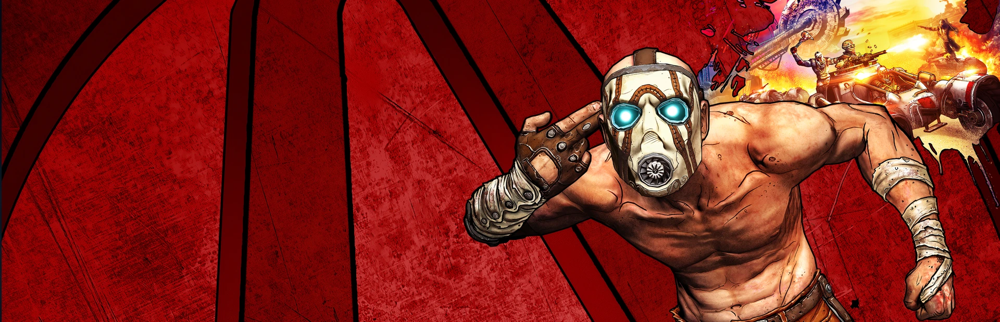
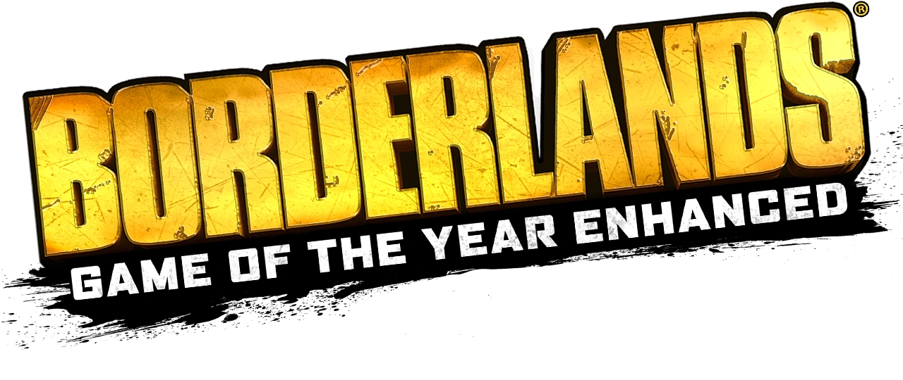

Completion
Save, back up and settings
Saved in this browser automatically. To move progress to your phone, Back up here and Restore there.


All 80 achievements for the base game and its four DLCs (Zombie Island of Dr. Ned, Mad Moxxi's Underdome Riot, The Secret Armory of General Knoxx and Claptrap's New Robot Revolution), a twelve-run plan from a blind first playthrough to Crawmerax and the Claptrap grind, and a 100% guide with every mission, Claptrap, loot midget and statue. Progress saves in this browser.